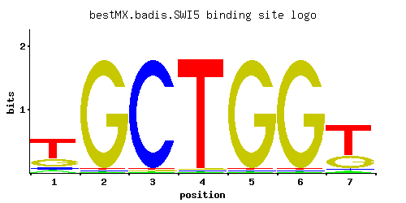

SWI5
YDR146C
Transcription factor that activates transcription of genes expressed at the M/G1 phase boundary and in G1 phase; localization to the nucleus occurs during G1 and appears to be regulated by phosphorylation by Cdc28p kinase
Best-performing DNA-binding model.

View and copy the recommended matrices ↘
A | 0.08 0.01 0.01 0.01 0.01 0.01 0.04 C | 0.08 0.01 0.97 0.01 0.01 0.01 0.04 G | 0.23 0.97 0.01 0.01 0.97 0.97 0.27 T | 0.61 0.01 0.01 0.97 0.01 0.01 0.65
A | 8 1 1 1 1 1 4 C | 8 1 97 1 1 1 4 G | 23 97 1 1 97 97 27 T | 61 1 1 97 1 1 65
A | -1.39 -3.47 -3.47 -3.47 -3.47 -3.47 -2.08 C | -0.81 -2.89 1.68 -2.89 -2.89 -2.89 -1.50 G | 0.25 1.68 -2.89 -2.89 1.68 1.68 0.41 T | 0.65 -3.47 -3.47 1.11 -3.47 -3.47 0.71
Alternative candidate matrices 5
Historical matrix candidates from the original ScerTF database. Expand a source to inspect its original logo, scores, and matrix values.
SWI5Foat et. al.P = 1.01e-14View matrix ↘
SWI5Harbison et. al.P = 1.53e-07View matrix ↘
SWI5Macisaac et. alP = 2.44e-09View matrix ↘
SWI5Pachkov et alP = 7.52e-08View matrix ↘
SWI5Zhu J and MQ ZhangP = 1View matrix ↘
Gene-level annotations and interactions.
Genes bound in ChIP-chip experiments 201 genes
YAL017W, YAL018C, YAL022C, YAR009C, YBL048W, YBL049W, YBL069W, YBL071C, YBL108W, YBR040W, YBR058C-A, YBR059C, YBR070C, YBR071W, YBR083W, YBR097W, YBR157C, YBR158W, YBR190W, YBR191W, YBR230C, YDL030W, YDL032W, YDL035C, YDL112W, YDL113C, YDL114W, YDL115C, YDL117W, YDL119C, YDL127W, YDL173W, YDL174C, YDL179W, YDL223C, YDL224C, YDL225W, YDL226C, YDR054C, YDR055W, YDR112W, YDR154C, YDR155C, YDR156W, YDR157W, YDR158W, YDR164C, YDR165W, YDR210W-D, YDR212W, YDR345C, YDR397C, YDR398W, YDR418W, YDR543C, YEL069C, YEL073C, YEL076W-C, YEL077C, YER064C, YER078C, YER079W, YER138C, YER177W, YER189W, YER190W, YFL013W-A, YFL021W, YFL022C, YFL063W, YFL064C, YFL065C, YFR017C, YFR031C-A, YGL028C, YGL108C, YGL139W, YGL140C, YGL210W, YGL226C-A, YGL226W, YGL227W, YGR038C-B, YGR041W, YGR060W, YGR086C, YGR189C, YGR234W, YGR254W, YGR296W, YHL012W, YHL013C, YHR033W, YHR091C, YHR138C, YHR190W, YIL009W, YIL018W, YIL050W, YIL051C, YIL128W, YIL129C, YIL173W, YIL176C, YIR004W, YJL078C, YJL080C, YJL148W, YJL159W, YJL160C, YJL188C, YJL207C, YJL217W, YJL225C, YJR044C, YJR148W, YKL044W, YKL163W, YKL164C, YKL185W, YKL186C, YLL063C, YLR011W, YLR012C, YLR013W, YLR035C-A, YLR049C, YLR078C, YLR079W, YLR105C, YLR194C, YLR207W, YLR276C, YLR286C, YLR287C-A, YLR300W, YLR346C, YLR397C, YLR406C, YLR407W, YLR439W, YLR440C, YML100W, YML101C, YML102C-A, YML111W, YML125C, YML131W, YMR014W, YMR135W-A, YMR149W, YMR165C, YMR172C-A, YMR173W, YMR173W-A, YMR242C, YMR251W-A, YMR252C, YMR261C, YMR262W, YNL032W, YNL034W, YNL078W, YNL079C, YNL112W, YNL114C, YNL141W, YNL145W, YNL192W, YNL238W, YNL241C, YNL269W, YNL271C, YNL324W, YNL326C, YNL327W, YNL328C, YNL335W, YNL336W, YNL337W, YNR018W, YOR138C, YOR140W, YOR236W, YOR264W, YOR273C, YOR274W, YOR348C, YOR349W, YPL024W, YPL025C, YPL050C, YPL157W, YPL158C, YPL195W, YPL198W, YPL251W, YPL253C, YPL283C, YPR183W, YPR185W
Genes affected by TF deletion 126 genes
YCR040W, YGR278W, YHL014C, YGR282C, YJR020W, YOR225W, YDL098C, YDL131W, YDR192C, YFR032C-A, YGL009C, YBR031W, YCR013C, YGR279C, YKR042W, YKR013W, YMR044W, YOR226C, YCR097W-A, YHR142W, YHR143W-A, YJL052W, YPR083W, YDL033C, YGR031W, YHR025W, YMR071C, YNL149C, YOR351C, YPL187W, YHR208W, YBR067C, YDR461W, YFR006W, YHR021C, YJR146W, YJR117W, YNL146W, YCL018W, YDL191W, YIL015W, YLR185W, YML055W, YJL131C, YLR287C-A, YDL133C-A, YDL136W, YMR230W, YOR045W, YBR011C, YER154W, YJR148W, YDL075W, YER001W, YEL021W, YKL081W, YDR502C, YOL144W, YBL062W, YGR192C, YKL209C, YKL178C, YLR343W, YLR349W, YNL150W, YOL143C, YCL027W, YIL027C, YKL177W, YOR170W, YHR010W, YKR093W, YLR291C, YLR262C-A, YLR234W, YOR239W, YGR140W, YLR040C, YLR420W, YCL066W, YDR447C, YHR005C-A, YIL163C, YOR210W, YKL120W, YLR041W, YCR097W, YFL026W, YHR072W-A, YKL032C, YLR388W, YOL126C, YGL089C, YBR145W, YGR044C, YNL162W, YPL281C, YJR004C, YKL216W, YNR044W, YGL225W, YLR303W, YOR247W, YER019C-A, YHR141C, YGL224C, YLR302C, YNL070W, YOR248W, YDL243C, YAR031W, YGL032C, YBR118W, YJR135W-A, YDL184C, YJR009C, YDL179W, YDL211C, YER073W, YGL098W, YML107C, YML081C-A, YOR182C, YPR190C, YPR176C, YPR180W
Genes supported by both experiments 3 genes
YDL179W, YJR148W, YLR287C-A